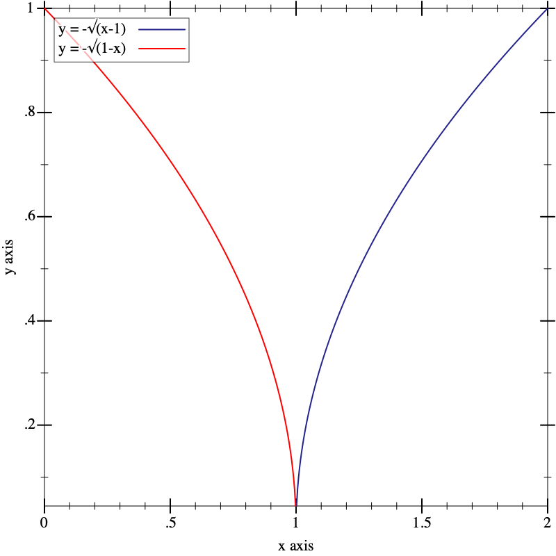

7.9
A common misunderstood about Limit
Lîm Tsú-thuàn <dannypsnl@gmail.com>
Suppose there have two functions,
f(x) = \sqrt{x - 1}
and
g(x) = \sqrt{1 - x}
We can calculate their limit of 1, both are 0
\lim\limits_{x \to 1} f = 0
\lim\limits_{x \to 1} g = 0
Accordings to formula
\lim\limits_{x \to n} (f + g) = \lim\limits_{x \to n} f + \lim\limits_{x \to n} g
, thus
\lim\limits_{x \to 1} (f + g) = 0
is correct? And this is graph of f and g

, it looks promising. Unfortunately, this is incorrect because
\lim\limits_{x \to 1} (f + g)
has no result. Back to the domain of f(D_f) and domain of g(D_g), originally \lim\limits_{x \to 1} is meaninful since interval of x = 1 is existed, but in the new domain D_f \cap D_g, x = 1 has no interval around it, so no limit actually.
What is the point here, the point is check limit existed by checking domain has interval around it is important, don’t forget about it.